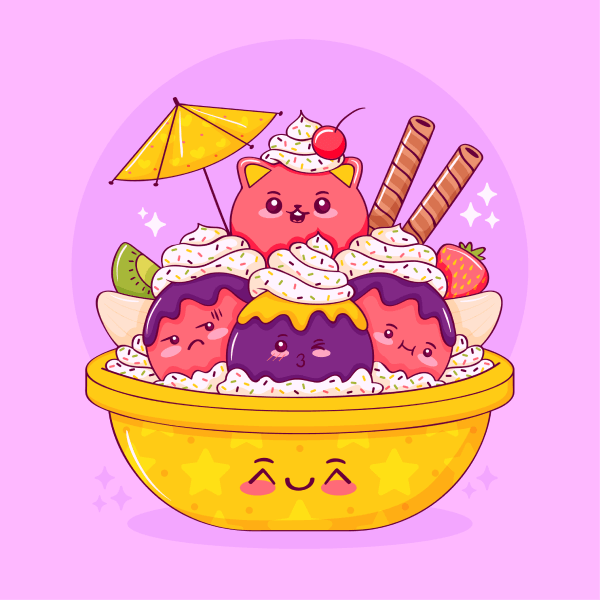

Многозадачность
Постоянное переключение между задачами мешает сосредоточиться на чём-то одном. Когда внимание постоянно перескакивает, становится сложнее доводить начатое до конца.
Сложно сосредоточиться?
Постоянное переключение между задачами мешает сосредоточиться на чём-то одном. Когда внимание постоянно перескакивает, становится сложнее доводить начатое до конца.
Большой поток информации и уведомлений может отвлекать от важных дел. Мозгу требуется время, чтобы переключиться и снова сосредоточиться.
Выбери одно дело, которое сейчас важнее остальных. Запиши его и сосредоточься на выполнении.
По возможности отключи ненужные уведомления и подготовь рабочее место заранее.
Небольшие перерывы помогают переключиться и вернуться к задаче с новой концентрацией.
Иногда полезно ненадолго переключиться: прогуляться, послушать музыку или заняться чем-нибудь другим.
Раздели большую задачу на небольшие шаги. Так проще понимать, с чего начать и что делать дальше.

